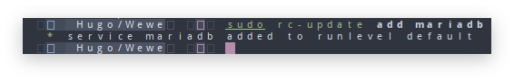
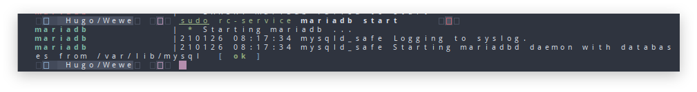
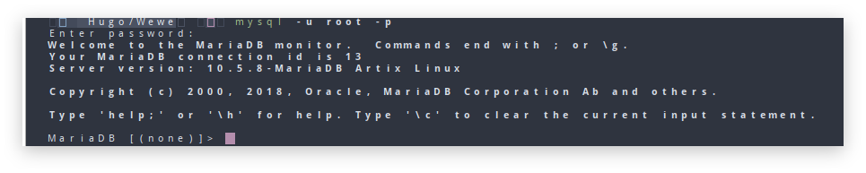

Manajemen Service Di Artix OpenRC
Halo Semua kali ini saya akan membuat tulisan untukku sendiri atau sukur" dapat membantu teman" \u263A. Saya menemukan masalah ketika saya mencoba distro linux Artix(OpenRC) saya cukup bingung gimana carannya manajemen service di artix yg saya sebelumnya dari archlinux, mungkin cukup mudah karna saya cukup familiar dan sudah banyak blog" yang membahasnya. Saya akan meenginstall Mariadb dan bagaimana menjalankan servicnya di OpenRC.
Pertama Install Mariadb terlebih dahulu
sudo pacman -S mariadb mariadb-OpenRC
Dan untuk melihat daftar service bisa melalukan Perintah
rc-service -l
Menambahkan Service ke runlevel
runlevel merupakan dimana service akan di jalankan. Cara menambahkanservice ke runlevel
sudo rc-update add <nama-service>
atau saya menggunakan mariadb sebagai contoh di atas
sudo rc-update add mariadb
jika berhasil akan seperti ini:

Jika sudah karna saya menggunakan mariadb sebagai contoh maka saya harus menjalankan perintah berikut. untuk yang tidak menggunakan mariadb bisa langsung ke step selanjutnya :
sudo mysql_install_db --user=mysql --basedir=/usr --datadir=/var/lib/mysql
Menjalankan, Merestart dan Menghentikan Service
Untuk menjankan sama seperti service yg lain kita masih menggunakan perinta start stop restart untuk menjalankannya menggunakan perintah :
sudo rc-service mariadb start

untuk stopsudo rc-service mariadb stop
Untuk restart
sudo rc-service mariadb restart
Jika sudah bisa coba masuk ke mariadb dengan perintah berikut
mysql -u root -p
jika sudah bisa maka akan tampil seperti berikut

Kalau sudah selesai semuannya sekian dan terimakasih.
Referensi
- {{ newtabref href=“https://bandithijo.github.io/blog/mudah-manajemen-service-dengan-OpenRC" title=“bandithijo.github.io/blog/mudah-manajemen-service-dengan-OpenRC” }}
- {{ newtabref href=“https://wiki.archlinux.org/index.php/OpenRC" title=“Arch Wiki :OpenRC” }}